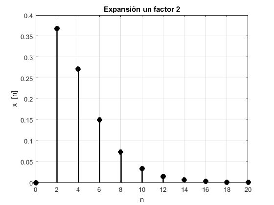
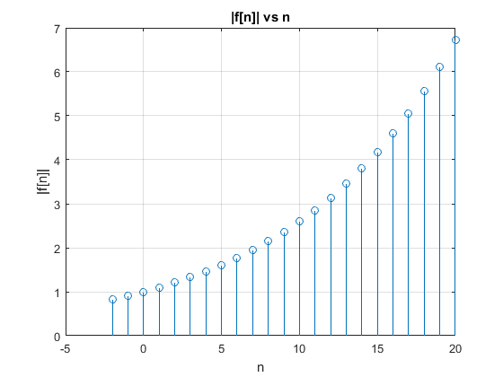

Práctica 3
Integrantes del equipo
- Alarcon Camacho Aldo yosef
- Islas Martinez Ceasar
- Monroy Reza Rene
- Ochoa Velasquez José Abraham
Contents
Objetivos
- Manipulación básica de MATLAB
- Gráficas de Señales reales y complejas discretas
- Transformación de señales discretas (escalamiento y traslaciones)
- Calculo de energía y poencia de señales discretas
Introducción
Señales en tiempo discreto
Una señal de tiempo disctreto es básicamente una secuencia de numeros. Tales señales surgen naturalmente en un tiempo inherente discreto como estudios de población, problemas de amotrización, modelos de ingreso nacional y seguimiento por radar. Tamien pueden surgir como resultado del muestreo de señales en tiempo continuo. Dichas señales pueden denotarse como .
Escalamiento Horizontal de Señales
La alteración de la frecuencia de muestreo es algo similar al escalamiento de señales en tiemoi continuo. Considere una señal comprimida por un factor . Al comprimir una señal por el factor se obtiene dada por
Debido a que la restricción para señales en tiempo discreto están definidas unicamente para valores enteros del argumento, debemos restringir a valores enteros los valores de ![$x[Mn]$](principal_eq02696895028348162006.png) en son Esto significa que toma cada muestra de de y elimina todas las muestras entre estos valores. Por esta razón, esta operación es llamada diezmado.
en son Esto significa que toma cada muestra de de y elimina todas las muestras entre estos valores. Por esta razón, esta operación es llamada diezmado.
En el caso del tiempo continuo, una cpmpresión del tiempo somplemente acelera la señal sin que exista pérdidad de datos. En contraste, el diezmado de generalmente causa pérdida de información. Para ciertas condiciones, por ejemplo, sí es el resultado de expandir alguna señal de tiempo continuo, entonces puede todavia retener la información completa sobre . Se genera una señal interpolada en dos pasos; primero, expandimos por un factor entero para obtener la señal expandida , como o  en otro caso.
en otro caso.
Ejemplo
% Sea la señal $f[n]=xe^{-x}$ % f=@(x) x.*(exp(-x)); n=0:10; stem(n,f(n),'MarkerFaceColor',[0 0 0],'LineWidth',2,'Color',[0 0 0]); xlabel('n'); grid('on'); ylabel('x [n]'); title('Funciín original');
Compresión de la señal*
stem(n,f(2*n),'MarkerFaceColor',[0 0 0],'LineWidth',2,'Color',[0 0 0]); xlabel('n'); grid('on'); ylabel('x [n]'); title('Compresiónpor un factor 2');
Expansión de la señal
N=0:2:20; stem(N,f(N/2),'MarkerFaceColor',[0 0 0],'LineWidth',2,'Color',[0 0 0]); xlabel('n'); grid('on'); ylabel('x [n]'); title('Expansión un factor 2');
Desarrollo
Problema 1
Crea una función que se llame fun1 y reciba dos parametros y la función debe regresar la evaluación , esta función debe trabajar con , y .
r=1.1; o=0.5; n=(-2:20); [f1,f2,f3]=fun1(r,o,n);
Problema 2
Construya una función que gráfique funciones de en el formato de su elección y pruebe su código mostrando la gráfica de vs para para .
discreta=@(t)(t.*[(9/10).^t]); t=[-2:1:10]; escalon=@(o)(o>=0).*(1)+(o<0).*(0); o=[-2:10]; grafica(t,discreta(t).*escalon(o))
Problema 3
Construya una función que gráfique funciones de en el formato de su elección y pruebe su código mostrando la gráfica de la función exponencial del primer problema. Reporte la gráfica de vs y vs
Grafica_1
funG(n,f1,f2);
Grafica_2
nor=abs(f3); fig2(n,nor)
Grafica_3
theta=atan2(f2,f1); angle(n,theta)
Problema 4
Programe una función que calcule la energía de una señal en tiemp discreto la fucion se debe llamar energiadis. La función recibe dos paramétros de entrada: el vector de tiempo y las alturas asignadas. La función regresa la energia de la señal y despliega la gráfica de la señal. Crea una función que calcule la energía de una señal en tiempo discreto
% Enerigia Señales en tiempo discreto function Ex=energiadis(t,fun) %t es el vector de tiempo % fun es la función a la que se le calcula la energía X=fun(t); E=X.^2; Ex=sum(E); stem(t,X,'MarkerFaceColor',[0 0 0],'LineWidth',2,'Color',[0 0 0]); xlabel('n'); grid('on'); ylabel('x [n]'); title('Gráfica de la Función'); end
Problema 5
Resuleve el problema 3.1.1 c) de Lathi, aplicando la función anterior
t=-10:10; f=@(t) (t<-3).*(0)+(t>=-3 & t<=3).*(t)+(t>3).*(0); Energia=energiadis(t,f)
Energia =
28
Problema 6
Resuelve el problema 3.2.3 de Lathi
%x[-n] x1=[-3 -2 -1 0 1 2 3]; y1=[3 2 1 0 -1 -2 -3]; subplot(2,3,4); stem(x1,y1); xlabel('x[-n]') grid on title('Incicso a)') % %x[n+6] x2=[-9 -8 -7 -6 -5 -4 -3]; y2=[-3 -2 -1 0 1 2 3]; subplot(2,3,2); stem(x2,y2); xlabel('x[n+6]') grid on title('Incicso b)') % %x[n-6] x3=[3 4 5 6 7 8 9]; y3=[-3 -2 -1 0 1 2 3]; subplot(2,3,3); stem(x3,y3); xlabel('x[n-6]') grid on title('Incicso c)') % %x[3n] x4=[-1 0 1]; y4=[-3 0 3]; subplot(2,3,4); stem(x4,y4); xlabel('x[3n]') grid on title('Incicso d)') %x[n/3] x5=[-9 -6 -3 0 3 6 9]; y5=[-3 -2 -1 0 1 2 3]; subplot(2,3,5); stem(x5,y5); xlabel('x[n/3]') grid on title('Incicso e)') % %x[3-n] x6=[0 1 2 3 4 5 6]; y6=[3 2 1 0 -1 -2 -3]; subplot(2,3,6); stem(x6,y6); xlabel('x[3-n]') grid on title('Incicso f)')
Referencias
- Cleve Moler. (2004). The Origins of MATLAB. 2019, de MathWorks Sitio web: https://www.mathworks.com/company/newsletters/articles/the-origins-of-matlab.html
- maslinux. (2017). 3 Alternativas de C?digo abierto a MATLAB. 2019, de maslinux Sitio web: https://maslinux.es/3-alternativas-de-codigo-abierto-a-matlab/
- B. P. Lathi, Linear systems and signals,Oxford University Press , 2005. Convolucion,procesamiento de se~nales.Recuperado el 6 de septiembre del 2019.https://ramaucsa.wordpress.com/2013/12/17/convolucion-procesamiento-de-senales/